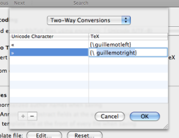

Custom Character Conversions Custom Character Conversions
Custom Character Conversions Custom Character ConversionsThe Character Conversions Editor allows you to add characters to be converted between TeX and Unicode. See Character Conversion for more details.
You can open the Character Conversions Editor by choosing the "Custom character conversions" button in the Files Preferences.

BibDesk uses two sets of character conversions between TeX and Unicode. Conversions can occur in both directions, or they can occur only from Unicode to TeX. With the "One-Way/Two-Way Conversions" popup you can choose the type of conversions to edit.
The left column displays Unicode characters that BibDesk should convert to TeX. These can only be single Unicode characters.
Note that for two-way conversions, the TeX equivalent should always
start with {\ and end with }. Therefore, the editor does not
allow you to edit these characters when you are editing a two-way conversion.
You can add a new character conversion by choosing the "+" button. Choosing the "-" button will remove the currently selected items.
When you are done editing, you should choose the "OK" button to save your edits. If you choose the "Cancel" button, your changes will be lost.
{\ and }, you can only add it as a one-way conversion.